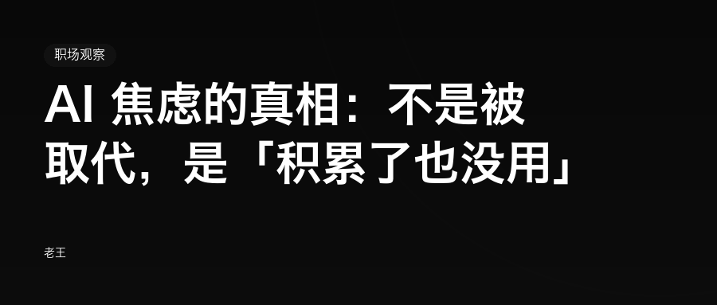
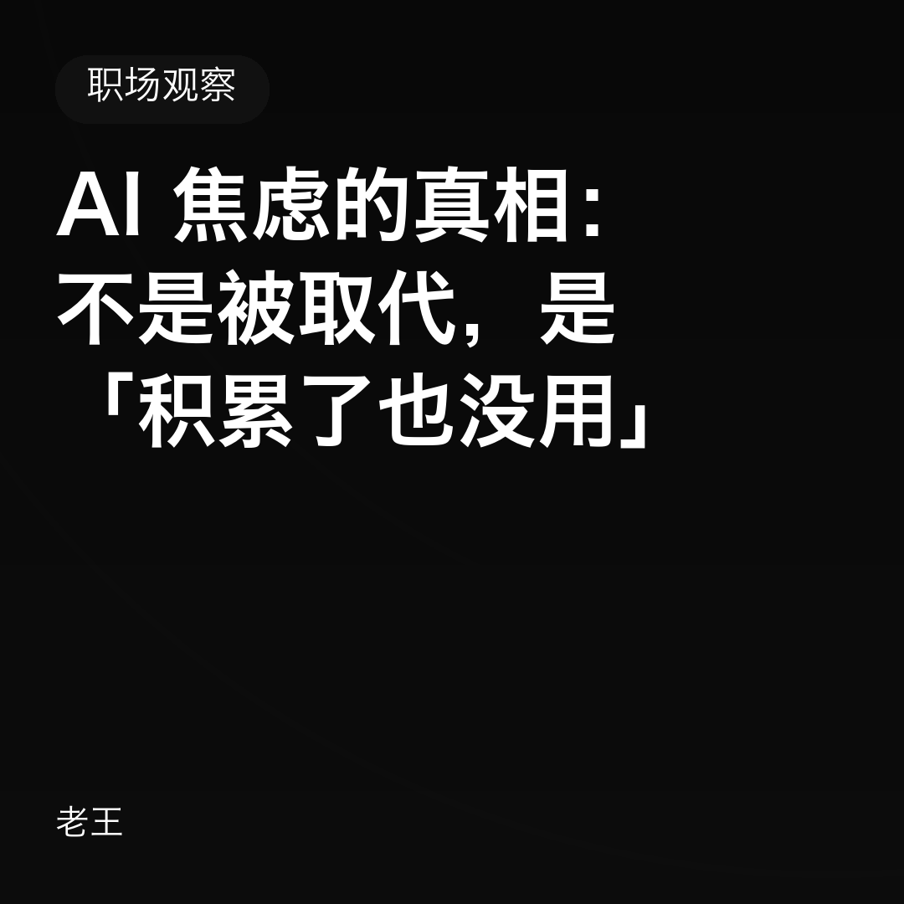
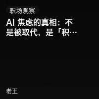

大多数人把 AI 焦虑归因于「被取代」，但真正让人慌的是投入不再产生复利——你学的东西，半年后可能就不值钱了。换一个更耐用的积累标的。
④ 作者
老王
封面图

头条封面 900×383

方形 1080×1080

次条 200×200
上传时选 cover.png 作头条封面；次条用 cover-thumb.png。
发布前清单
标题、摘要已填入后台（不是正文里）
封面图已上传，头条用 cover.png
正文里的图片已在编辑器里逐张上传（本地图片不会自动带过去）
文末「阅读原文」链接已设置（如需要）
留言、打赏、原创声明按要求开启
通读一遍手机预览，重点看表格和代码块
正文
AI 焦虑的真相：不是被取代，是「积累了也没用」周三晚上十一点，你刷到一条推送：某个模型又更新了，某项能力超过了人类专家水平。你点了收藏，关掉手机，心里发闷。不是怕失业——你手头的工作还稳。是你突然意识到，自己已经连着几个月在下班后学新工具，却说不清到底学到了什么。一、我们可能把焦虑的对象搞错了这种情绪通常被叫做「AI 焦虑」，然后顺手归因成「怕被取代」。如果真是这样，解法应该很清楚：学得更快、钻得更深、变成那个例外。但试过的人都知道，这个方法不太管用。原因在于，「被取代」是一个结果判断，而你的焦虑是一种过程感受。结果判断可以等：行业什么时候变、岗位什么时候被重构，都有相对明确的时间尺度，你等得到信号。过程感受不能等：它每天都在发生，每一条推送都在提醒你一次。每天真正在响的其实是这句话：我今天学的东西，半年后还值钱吗？这句话背后不是恐惧，是计算。二、算不过来的那一小时过去学一门技术，投入产出是清楚的：一门语言能用很多年，一套方法论能撑住很长一段时间。现在你不确定。可能是半年，可能是三个月，也可能下周就冒出一个新东西，把你刚熟练的做法变成「上一代方案」。同样是一小时，期望回报变了。人其实不怕辛苦，怕的是白辛苦。这也解释了一个看着有点反直觉的现象：用得越多的人，往往越焦虑。不用 AI 的同事反而很平静——他还没投入，自然没有沉没成本要算。而你已经投入了，所以开始计算回报率。别把这种焦虑当燃料「焦虑驱动学习」在技能保鲜期长的年代是成立的，放到现在只是在加速消耗。 连续几个月用焦虑推着自己走，代价是：你不再愿意做任何短期看不到回报的事——而那类事，恰恰是积累判断力的。三、问题可能出在「积累标的」上多数人默认的积累标的是工具能力：会不会用某个模型、某个插件、某套工作流。但工具能力正在被商品化。它越来越便宜、越来越标准化、越来越不需要专门去学。那什么是没被商品化的？我看是三样：定义问题。 AI 很擅长答题，不擅长替你判断「该问什么」。练法：用 AI 之前，先写下你要解决的真实问题。验收结果。 AI 出错是常态，判断它错在哪，需要你真的懂这一行。练法：不直接采纳，逐条追问「这个结论的依据是什么」。承担责任。 出事之后谁签字，这件事 AI 接不了。练法：主动认领结果，而不是把决定推给工具。这三样有个共同点：都不绑定具体工具，而且越用越厚。工具会换，判断不会。